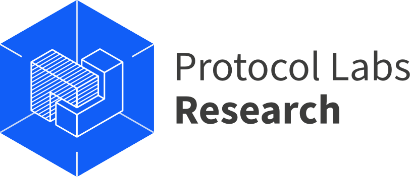

| Home | Calls | Committees | Programme |
The Workshop on Decentralized Internet, Networks, Protocols, and Systems (DINPS) which will take place alongside IEEE ICDCS 2022 is a continuation of the DI2F 2021 workshop, which was held at IFIP Networking 2021.
The emergence of the Web3.0 paradigm as well as the increasing exploration of naturally decentralized computation paradigms as in edge computing, decentralized systems are becoming more relevant than ever.
This workshop aims to bring together researchers and practitioners in the fields of decentralized systems, peer-to-peer networks, and edge computing. Now is the time to leverage our expertise and discoveries in this area to define the future of the decentralized Internet!
For questions and clarifications please email us at yiannis@protocol.ai.
|  |
| Design by Mike Pierce | Content © Protocol Labs Research | Except as noted, licensed CC-BY 4.0 |